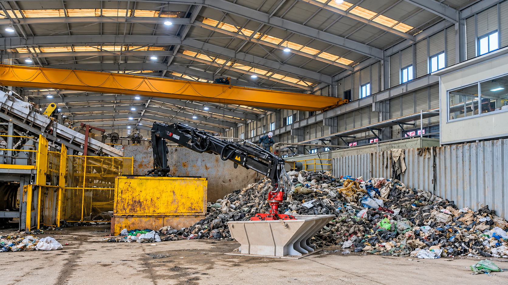
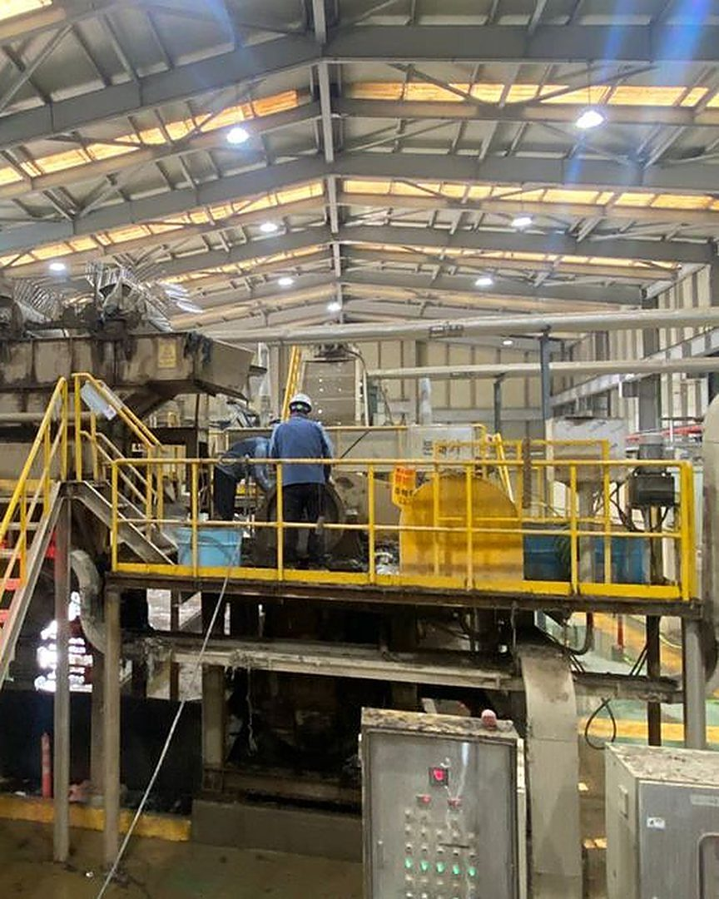

Sampah Kota Jadi Bahan Bakar dan Pipa Komposit
Pengolahan sampah dan mesin penghancur buatan sendiri, dari Cilegon untuk Indonesia.
SRF (bahan bakar padat pengganti batu bara), larva BSF, pupuk organik, dan mesin penghancur sampah.

Skala dan Kemampuan Kami
Proyek utama kami adalah revitalisasi TPSA Bagendung di Kota Cilegon, untuk menaikkan kapasitas olah dan kualitas bahan bakar SRF.
ton sampah per hari: kapasitas olah TPSA Bagendung dari 30 ton, ditargetkan naik hingga 200 ton.
jenis produk: SRF, pipa komposit, larva BSF, dan pupuk organik
paten teknologi penghancur dan pemilah, termasuk yang terdaftar di Korea Selatan
proyek riset nasional pemerintah pusat Korea Selatan yang berhasil diselesaikan
Bagaimana Sampah Diolah
Klik tiap tahap untuk melihat apa yang terjadi di TPSA Bagendung.
Dari Sampah Rumah Tangga Cilegon Menjadi Empat Produk
Sampah rumah tangga dipilah, dicacah, dan digiling secara bertahap. Plastik, bahan bakar, dan sisa makanan masing-masing mengalir ke jalur pengolahannya sendiri.
Tahap awal: pengumpulan, pencacahan, dan pemilahan
-
01
Pengumpulan Plastik
Plastik yang masih bisa didaur ulang diletakkan di ban berjalan datar, lalu dipilah dan dikumpulkan secara manual oleh tenaga kerja.
-
02
Pencacahan
Sisa sampah rumah tangga dicacah sampai ukuran tertentu sesuai kebutuhan proses berikutnya.
-
03
Pemilahan Tahap Pertama
Mesin memisahkan sampah organik, seperti sisa makanan dan sayuran, dari sampah yang dapat dibakar. Keduanya keluar otomatis lewat jalur berbeda.
Jalur sampah yang dapat dibakar
Hasil: SRF-
04
Penggilingan
Sampah yang dapat dibakar digiling sampai ukurannya seragam, kurang dari 100 mm.
-
05
Pemilahan Tahap Kedua
Sisa bahan organik dan kadar air dalam sampah hasil gilingan dipisahkan dan dikeluarkan secara otomatis.
-
06
Produksi SRF
Sampah dikeringkan sampai kadar airnya sesuai spesifikasi. Hasilnya, SRF (Solid Recovered Fuel), dijual ke pabrik semen sebagai bahan bakar alternatif.
Jalur sampah organik
Hasil: larva BSF dan pupuk organik-
07
Fermentasi Sampah Organik
Sisa makanan dan sayuran diolah sampai ukuran sesuai, diberi bioaktivator seperti EM (Effective Microorganisms), lalu kadar airnya diatur agar cocok untuk pakan larva.
-
08
Budidaya Larva BSF
Sampah organik hasil fermentasi menjadi pakan larva BSF (Black Soldier Fly). Larvanya dimanfaatkan sebagai bahan baku pakan ikan dan unggas, sesuai standar keamanan dan mutu pakan.
-
09
Pupuk Organik dari Frass
Frass, residu budidaya larva BSF, dimatangkan dan dikeringkan, lalu dipasok ke petani sebagai pupuk organik.
Empat Produk Akhir
-
Dari tahap 1
Pipa dan Manhole Komposit Plastik
Pipa saluran air limbah dan manhole dari plastik bekas.
-
Dari tahap 6
SRF (Solid Recovered Fuel)
Bahan bakar alternatif untuk pabrik semen.
-
Dari tahap 8
Larva BSF
Bahan baku pakan ikan dan unggas.
-
Dari tahap 9
Pupuk Organik
Dari frass, dipasok ke petani.
Hasilnya, volume sampah berkurang dan sampah berubah menjadi produk bernilai ekonomi.
Produk Kami
Limbah diubah menjadi produk bernilai guna.

Mengapa Sampah Perlu Diolah Jadi SRF
Teknologi Sendiri, Disesuaikan untuk Sampah Indonesia
Kami merancang mesin sendiri, lalu menyesuaikannya dengan kebutuhan pelanggan dan sifat sampah di lapangan.
Lihat Peralatan Kami-
Paten
Teknologi kami dilindungi paten, termasuk yang terdaftar di Korea Selatan.
-
3 proyek riset nasional
Tiga kali berhasil menyelesaikan proyek riset nasional pemerintah pusat Korea Selatan.
-
Dirancang sendiri
Mesin dirancang di dalam perusahaan, sesuai kebutuhan pelanggan dan sifat limbahnya.
-
Diuji di Cilegon
Mesin penghancur dikembangkan untuk sampah rumah tangga Indonesia dan cara kerja pekerja di sini. Dirancang agar tidak berhenti walau sampah masuk sekaligus dalam jumlah besar, lalu diuji langsung di Cilegon. Videonya ada di bawah.
lebih tahan aus dibanding pelat baja biasa, berkat pelapisan karbida tungsten WC-Co.
Pisau Penghancur yang Lebih Awet
Teknologi yang kami pakai pada mata pisau shredder dan crusher menekan biaya penggantian.
Pelajari TeknologinyaTerbukti di Lapangan Indonesia
Mesin penghancur dan penyortir kami diuji langsung di lapangan di Cilegon. Keduanya dikembangkan sesuai sifat sampah dan cara kerja di Indonesia.
hasil hancuran sesuai ukuran standar
pada mesin penghancur biasa
ukuran produk hancuran
meski sampah masuk sekaligus dalam jumlah besar
Mari Diskusikan Kebutuhan Anda
Pengolahan sampah atau peralatan penghancur, kami siap membantu.